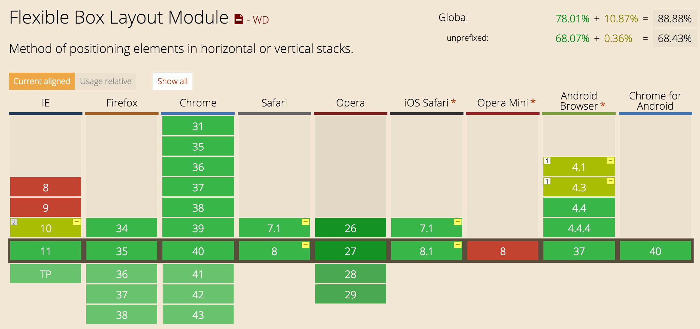
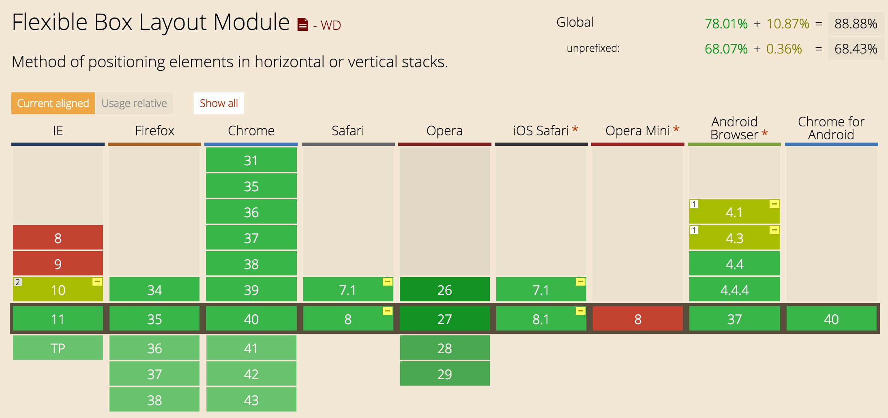

Ionic, the new framework for building apps
Henk
Passion
Overview
- Native vs Hybrid Apps
- Intro Ionic
- UI Components
- Ionic CLI
- Demo
“I want to build an app!”
More Platforms. More Problems.


Hybrid Apps!
“It's not 2007 anymore”

| Year | Device | Processor | RAM |
|---|---|---|---|
| 2007 | iPhone | 400 MHz | 128 MB |
| 2010 | iPhone 4 | 1 GHz | 512 MB |
| 2015 | iPhone 6 | 1.4 GHz dual-core | 1 GB |
Web-standards
Have improved!
 

https://mixpanel.com/trends/#report/ios_8/from_date:-141,report_unit:day,to_date:0
https://mixpanel.com/trends/#report/android_os_adoption
Native SDKs...
Are Great!

Web Technologies You Already
Know & Love


Standing on the Shoulders
of Angular
Sass!
How it all comes together
- Your App
- Ionic
- Angular
- WebView (Cordova)
- Native App
Complex Lists
List Item {{ item.id }}
Collection Repeat
{{ c.name }}
{{ c.email }}
Navigation
Side Menu
Left Menu
...
Swipe To Go Back
Other Components
- Side Menus
- Actionsheet
- Modal
- Pull To Refresh
- Slidebox
- Infinite Scroll
- Swipeable List Options
- Popup
- Popover
- Loading Overlay
- Inputs
- Buttons
- etc.
Spinners
Ionicons

...but there's more to Ionic
npm install -g ionic cordova
Modern
Chromium!
Ionic's Adoption
- 16,000+ Github Stars
- Top 40 most starred Github repos
- Consistently Top 10 trending JS Github repos
- Ionic CLI 95,000 downloads/month
- 600,000+ Ionic apps have been started from our CLI
- Released Alpha: November 2013
- Released Beta: March 2014
- Released RC: March 2015
What's Next!
- Component Modularity
- Customized Animations
- Webworkers and Multi-threading
- Add more Ionic.io services
- ...and much more to come ;)
Demo Time!
May the demo gods be with us
http://demobulb.herokuapp.com
Create app
$ ionic start bulb tabs
Create router
.state('tab.dash', {
url: '/dash',
views: {
'tab-dash': {
templateUrl: 'templates/tab-dash.html',
controller: 'DashCtrl'
}
}
})
Create view
Create tabbar
Send messages
if (color === 'blue') {
localStorage.setItem("blue", text);
}
var rgb = localStorage.getItem("red") +
localStorage.getItem("green") +
localStorage.getItem("blue");
Messages.send(rgb);
angular.module('starter.services', ['ngWebSocket'])
.factory('Messages', function($websocket) {
var ws = $websocket('ws://demobulb.herokuapp.com');
var collection = [];